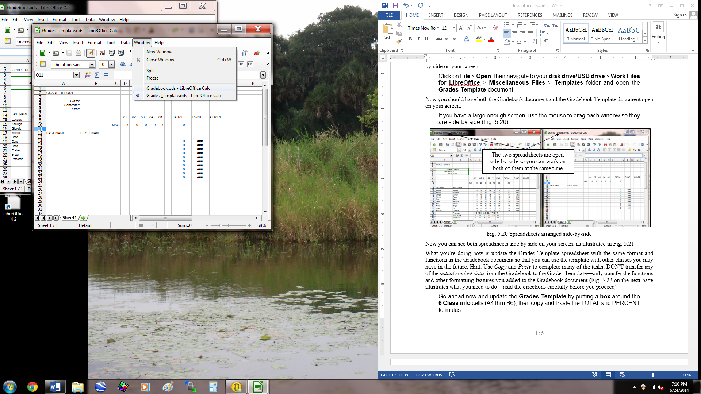
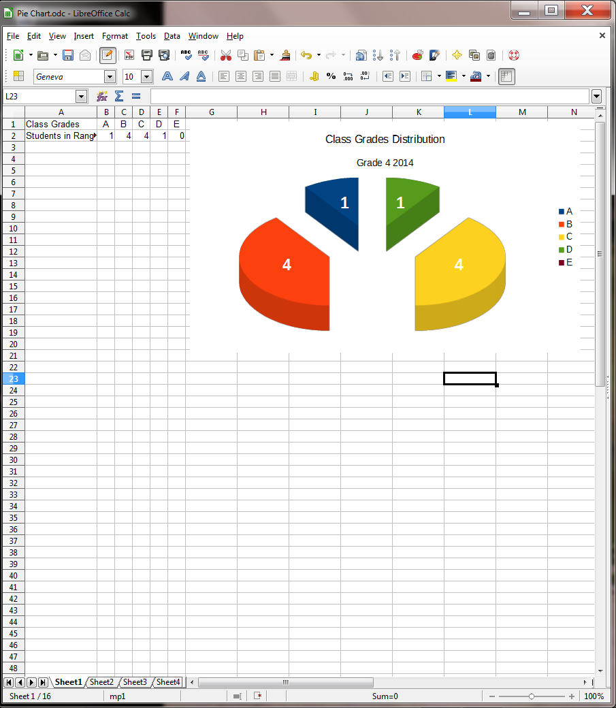

Lesson 5 More on the Use of the Spreadsheet¶
5 MORE ON THE USE OF the spreadsheet
Making changes to existing spreadsheets
LEARNING OUTCOMES
In this tutorial you will have the opportunity to learn the following.
- Updating an existing spreadsheet
- Making changes to the look of a spreadsheet
- Using the LibreOffice LOOKUP function
- Creating charts based on spreadsheet data
- Printing the updated spreadsheet
5.1 GETTING STARTED
Setting up for the tutorial
If you completed Lesson 1 of these tutorials, you can skip the rest of this section and proceed directly to the next section (Continuing with the tutorial, on the next page). If you did not complete Lesson 1, then you must do this now, before proceeding with the rest of Lesson 5.
The set of Work Files for LibreOffice ideally should be stored on a Flash drive (USB drive) in three folders named Base Files, Impress Files, and Miscellaneous Files. You need to create a fourth folder for the data files that you will be creating while working your way through the tutorials. This fourth folder will be called Data Files.
Here are the steps to prepare these folders now before proceeding with this tutorial.
First, Unzip the set of Work Files for LibreOffice by double clicking on the File name on your computer (your instructor will help you with this if you are working with a class) and Extract them onto your flash drive
Double click on the Work Files for LibreOffice folder to open it
Now, inside the Work Files for LibreOffice folder you need to create a new, fourth, folder called Data Files. Here’s how you do this.
In the Work Files for LibreOffice folder, select New Folder (Fig. 5.1).
Fig. 5.1 Creating a New Folder
The system will create a new folder for you and then wait for you to give it a name of your choice (Fig. 5.1 above).
Call the new folder Data Files
During the course of these tutorials you will be storing many files in this Data Files folder.
Continuing with the tutorial
You’re going to work with a Gradebook very similar to the one you created in Lesson 4. For the sake of uniformity, and to avoid confusion, you’re going to use a Grades Template and a Gradebook specially prepared for use with this lesson.
You will work on the Gradebook first.
By now you should know the steps to open a document, so go to your Work Files for LibreOffice > Miscellaneous Files > Other Documents folder and Open the Gradebook spreadsheet
Go to File > Save As, then navigate to your USB drive
Work Files for LibreOffice > Data Files > Spreadsheet Documents folder and Save the Gradebook there
5.2 RECAPITULATION AND REINFORCEMENT
The following sections give you an opportunity to refresh your memory of the basic spreadsheet skills you learned in Lesson 4.
Moving from cell to cell in the spreadsheet
In Lesson 4, you learned some of the more useful commands for moving around in the Calc spreadsheet (check Lesson 4, page 105, 106).
In Calc spreadsheet terminology, the cell that is selected (surrounded by a heavier border) is called the current (or active) cell. Take a moment now to reacquaint yourself with the methods for changing the position of the currently active cell.
The arrow keys move the current cell to the adjacent cell left, right, above, or below the current cell—press all four of the arrow keys a few times, and watch how the current cell moves around
The TAB key (forward) and the Shift-TAB command (back) also move the cursor to the adjacent cell, but only in a horizontal (right or left) direction—try these two commands now.
The RETURN key (forward) and the Shift-RETURN command (back) also move the cursor to the adjacent cell, but only in a vertical (up or down) direction—try these two commands now
Use the scroll bars when you want to move around the spreadsheet without changing the location of the current cell—try this, too
More cell selection commands
Selecting sets of cells in a spreadsheet
You occasionally may want to highlight all the cells in the spreadsheet—in order to change a font, the font size, or the overall cell background, for example. Here’s how you do this.
Click in the small box right above the Row headings and to the left of the Column headings (Fig. 5.2)
Fig. 5.2 Selecting an entire spreadsheet
The entire spreadsheet is now highlighted. However, perhaps you want to select only the cells that you’re working in. There are a couple of ways to do this.
Click anywhere in the spreadsheet to de-select the selected cells
Now, starting at cell A1, use the mouse to drag diagonally down from cell A1 to cell O24
That’s one way. Here’s another way of doing the same thing.
Click anywhere to de-select the selected cells then click in cell A1, hold down the Shift key, and click in cell O24
The same set of cells is selected. The Shift key is very useful for selecting an especially large range of cells in Calc, or a range of text in Writer, or even a range of slides in Impress, which you’ll learn about soon enough. Dragging with the mouse can get tedious and error prone when you have to select hundreds or thousands of adjacent cells, dozens of pages, or scores of slides. Remember this Shift key trick.
Going to a specific cell anywhere in a spreadsheet
If you are working in a large spreadsheet (consisting of thousands of cells, say) and you know the approximate coordinates of a cell you want to find, it is sometimes quicker to let Calc find the cell for you. The following simple steps will show you how to make the cell that intersects Column AJ and Row 423—a location quite deep inside the spreadsheet—the current (or selected) cell.
Click again in the small box right above the Row headings and to the left of the Column headings (Fig. 5.1 on the previous page), type AJ423 (you can use either upper case (AJ) or lower case (aj) for the column coordinate), then click on OK
There you go! Remember that the first (alphabetic) coordinate (AJ) is always the column; the second (numerical) coordinate is always the Row.
Click again in the small box right above the Row headings and to the left of the Column headings (Fig. 5.2 on the previous page), then type A1, and click on OK
You are now back at the first cell (A1) in the spreadsheet. Some of the options for moving about the spreadsheet are considerably slower than others, which is why you should take the time to familiarize yourself with all the different methods for moving around the spreadsheet, especially if you become a regular user of Calc.
5.3 Updating an existing spreadsheet
The Gradebook would benefit from some cosmetic changes, such as the following.
1. There should be double lines to set off different parts of the spreadsheet. It is often useful, for example, to include extra space (but not too much space) between the headings above the columns of data and the data itself, and also before summary totals at the bottom of columns of data.
2. It would be useful to include more formulas to increase the information content of the spreadsheet. For example, you could add a formula that calculates an average for each of the sets of grades so that your students can see where they stand in relation to the rest of the class on any particular assignment or test. A highest score and lowest score for each set of grades would also be useful.
3. It would be a good idea to protect cells containing data that you consider especially important. Protecting cells prevents you or someone else from accidentally losing or changing cell contents. It takes time to put together spreadsheet templates and other documents. Some cells will contain functions that are tricky to figure out. Protecting them will make it difficult to lose your work.
4. Finally, Calc can do some of the thinking for you if you include a LOOKUP Table to figure out the Letter grades for your students based on their percentage score at the end of a reporting period.
Let’s deal with these problems one at a time. In this section you’ll learn how to handle the first three improvements. Later in the lesson you’ll have the opportunity to learn how to create and use the LOOKUP function.
Dividing up the spreadsheet to make it easier to read
After you have fixed change #1, the Gradebook will look similar to Fig. 5.3.
Fig. 5.3 Gradebook after update #1
Breaks between sections of a spreadsheet help the eye locate important data when scanning the page, whether on screen or on paper. In Calc, the easiest way to do this is to use an extra row or column at the point where you want to create a division between different parts of the spreadsheet, and then put a border along the edges of the empty row and also reduce the width of the inserted row or column so it appears as a double line (Fig. 5.3 above).
Here are steps to update the spreadsheet along these lines.
On the left edge of the screen, in row 13, click on the row number (13) to select the entire empty row
First you want to put a border around the set of cells in Row 13.
Right click on the Row number 13 and, in the context menu, select Format Cells...
In the Format Cells dialog box click on the Borders tab, then click on the tool to Set Outer Border Only (Fig. 5.4), and click OK
Fig. 5.4 Putting a border around a row of cells
Now you want to reduce the row height so the whole row looks like a double line separating Rows 12 and 14.
Right click again on the Row Number 13 and, in the context menu, select Row Height..., then in the Row Height dialog box type the value 0.05” to replace the default height, and click OK
You need to create a similar dividing line after Row 23, which holds the data for the last student.
Right click on Row number 24 and, in the context menu, select Format Cells..., then in the Format Cells dialog box click on the Borders tab, then click on the Set outer border only tool (Fig. 5.4), and click OK
Right click on Row Number 24 and, in the context menu, select Row Height..., then in the Row Height dialog box type 0.05”, in the Shadow style section click on the first (no shadow) button, and click OK, then save your work (Ctrl-s)
Adding functions to the spreadsheet
Calc comes with many built-in functions. Let’s look at some of these built-in functions so that you know how to find them when you need them.
Start this exercise by clicking in cell A1, then, in the Formula Bar, click on the Function Wizard tool (Fig. 5.5)
Fig. 5.5 The Function Wizard tool in the Formula Bar
Clicking on the Function Wizard tool will bring up the Function Wizard dialog box (Fig. 5.6)
Fig. 5.6 The Function Wizard dialog box
In the Category section, click on the down arrow to bring up the various Categories of Functions available in LibreOffice
Select the Financial category (Fig. 5.6), then, in the Function section of the dialog box, check out the several dozen Financial functions available to you there
Do the same with the Calc Database, Date&Time, Information, Logical, Mathematical, Statistical, Spreadsheet, and Text sets of built-in Functions
Click on the Cancel button to close the Function Wizard dialog box
You are going to add three new functions to the Gradebook: the Average, the Max, and the Min functions. Let’s start with the Average function, which will calculate the average score for a set of student scores.
**Calculating an average for each of the Grade columns **
In Row 25 of the Gradebook spreadsheet, at the bottom of each of the columns that contain scores for homework, etc., you are going to put the value representing the average of the scores for each of the columns, as illustrated in Fig. 5.7.
Fig. 5.7 Average scores for each column
Notice, in Fig. 5.7, that cell B25, right under the column of first names, has the row label Average. You need to put the same cell entry in your Gradebook.
Select cell B25, type the label Average, and press Tab twice to move to cell D25
A word about automatic calculation
When Automatic Calculation is switched on, Calc immediately carries out any calculations that are necessary when you make any changes to the data in the spreadsheet.
With automatic calculation, you don’t have to remember to do this. If Automatic Calculation is not already on by default, it will be good for you to turn it on, so here’s how you do this.
In the Tools menu > Cell Contents…, check, in the Cell Contents sub menu, that there is a check mark next to AutoCalculate (Fig. 5.8)
Fig. 5.8 Automatic Calculation
Back to the task at hand
An average is computed by adding (SUMming) the set of scores for an assignment or test, and then dividing the total by the number of scores in the set. You could put together this formula yourself, of course. If you know what the formula would be for the first column of scores, write it in the box below. Remember, a function or formula always begins with the equals (=) sign.
Check the footnote below to see if you got the answer right[^1]. But since Calc has a built-in Average function, you may as well use it. Here are the steps to include the Average function in your spreadsheet.
Make sure cell D25 is still selected (the cell under the first column of scores), then click on the **Function Wizard (*fx) ***icon in the data entry bar and, in the Function Wizard dialog box, from the list of Categories, select the Statistical category (Fig. 5.9) and, from the list of Statistical functions, double click on the AVERAGE function to select it
Fig. 5.9 The Insert Function dialog box showing the Statistical category of Functions
Calc pastes the function into the Formula area of the dialog box, followed by a set of empty brackets. The brackets are for the set of cells that contain the scores that are to be averaged. Notice that the cursor is waiting between the brackets for you to select that set of cells.
Type D14:D23 (Fig. 5.9) then click on OK
Alternatively, you could use the mouse to drag down the set of cells from D14 to D23 with the same result. Look at the data entry bar at the top of the spreadsheet and notice that the formula =AVERAGE (D14:D23) is copied there, too.
Now look at cell D25. It should contain the average for the scores in Column D. At this stage there are three problems that can occur:
1. If you see a series of pound signs (#####), this indicates that there’s not enough room in the column to show the value, so you will need to widen the column a little to make enough space for the average score to appear. If this is the case (where you see ##### instead of an average score), make the column wider.
2. If a Bad Formula prompt pops up on the screen, check the formula in the entry bar again, compare it to the correct Average formula =AVERAGE(D14:D23), and make any corrections.
3. It is always possible that the values being averaged yield a result that turns out to be a whole number (no fractions). But it would be useful to show at least one decimal place, regardless of the outcome of the Average calculation. If the average displayed in your Gradebook is rounded to a whole number (no decimal places), here are the steps to change the precision of the Average value to 1 decimal place.
In the Format menu select Cells… and in the Format Cells dialog box > Options area, make sure that the number of Decimal places is set to 1
Assuming all is well, your next task will be to copy this Average formula into the cells immediately to the right of cell D25, so that you have an average score under the other columns of scores (cells E25 through I25).
Cell D25 should still be selected (click on it if it is not selected)
Fig. 5.10 shows you that you’re going to use the mouse to grab hold of the Fill handle in the lower right corner of cell D25 (you practiced doing this in Lesson 4) and drag it to the right to cell I25.
Fig. 5.10 Cell Fill handle
Use the mouse to point at the handle in the lower right corner of cell D25 (Fig. 5.10), and drag the handle across to Column I—so that the formula is copied across to cells E25, F25, G25, H25, and I25, which will all now have the correct Average score for their respective columns
That’s all there is to it. If necessary (though it shouldn’t be the case with this exercise) adjust the column widths if you see pound signs (#####) in any cell instead of averages.
Time to save all your hard work (Ctrl-s)
Displaying the Highest (MAX) and Lowest (MIN) scores for each column of scores
Now that you know how to use the Insert Function icon (fx) next to the Data Entry bar, and in particular since you just used it to put the Average function in your spreadsheet, you should be able to complete the exercise that follows without much help.
In cell B26 put the heading Max score and in cell B27 put the heading Min score
Make sure cell D26 is selected (the cell under the first Average calculation), then click on the **Function Wizard (*fx) ***icon in the data entry bar and, in the Function Wizard dialog box, from the list of Categories, select the Statistical category (Fig. 5.9 on page 139)
From the list of Statistical functions, double click on the MAX function to select it
Calc again pastes the function into the Formula area of the dialog box, followed by a set of empty brackets. The brackets are for the set of cells that contain the scores that are to be averaged. Notice that the cursor is waiting between the brackets for you to select that set of cells.
Type D14:D23 (Fig. 5.9—p. 139) then click on OK
In the data entry bar at the top of the spreadsheet notice that the formula =MAX (D14:D23) is copied there, too. Now look at cell D26. It should contain the maximum score in Column D.
Now make sure cell D27 is selected (the cell where you’re going to put the MIN formula), then click on the **Function Wizard (*fx) ***icon in the data entry bar
In the Function Wizard dialog box, from the list of Categories, select the Statistical category (Fig. 5.9 on page
From the list of Statistical functions, double click on the MIN function
Calc again pastes the function into the Formula area of the dialog box, followed by a set of empty brackets. The brackets are for the set of cells that contain the scores that are to be averaged. Notice again that the cursor is waiting between the brackets for you to select that set of cells.
Type D14:D23 (Fig. 5.9—p. 139) then click on OK
Look at the data entry bar at the top of the spreadsheet and notice that the formula =MIN (D14:D23) is copied there, too. Now look at cell D27. It should contain the maximum score in Column D. Check to confirm that that is indeed the case.
At this stage, the last task is to copy the Functions across to the other cells in rows 26 and 27. You probably already know how to do this, but here are the steps in case you need help.
With cell D26 selected, grab hold of the Fill handle in the lower right corner of the cell and drag across to the right to select cells E26 through I26—the cells in which you want to include the Max function, and click OK
Now, click on cell D27, grab hold of the handle in the lower right corner of the cell and drag across to the right to select cells E27 through I27—the cells in which you want to include the Min function, and click OK
Better Save your work (Ctrl-s)
When you’re done, your spreadsheet should look much the same as Fig. 5.11.
Fig. 5.11 The Gradebook after adding the functions (your data will be different)
Protecting (locking) important cells
Calc allows you to protect the contents of a cell or cells. This means that neither you nor anyone else will be able to change the contents unless you remove the protection. This feature is useful to prevent accidental loss of data, and will also help prevent others from interfering with the data you have collected.
Since all the data in a Grade book are important, it would be a good idea to protect everything. The process to do this is the same as if you were protecting a single cell, or a few cells, except that you select every cell.
Press Ctrl-a to Select All the cells in the spreadsheet then, from the Tools menu > Protect Document, click to put a check mark in the box next to Sheet —to select protection for the sheet (Fig. 5.12)

Fig. 5.12 Protecting the spreadsheet data
This brings up the Protect Sheet dialog box (Fig. 5.13).
Fig. 5.13 Protect Sheet dialog box
Take a look at this dialog box. Notice that the option to “Protect this sheet and the contents of protected cells” is checked by default, which is fine because that’s what you want to do. Notice, too, that you have the option to include a password for the protection, which would be important if this were a real world spreadsheet. But for the sake of this exercise, we’ll not use a password.
But you do need to remove the check mark next to Select unprotected cells. This is because you have opted to protect every cell in the spreadsheet.
So, click to remove the check mark next to Select unprotected cells, then click on OK
Now, even if you try to click on a cell, the system won’t let you. Every cell in the spreadsheet is protected against unwarranted attack.
Password protection
Of course, someone who knows how to use Calc will know how to unlock the protection—unless it’s protected by a password, of course. So if you really want to prevent someone else from messing with the data in the spreadsheet, you may need to take advantage of the option to include a password.
This is a necessary feature if you want to lock the cells in your spreadsheet in a way that prevents others from changing data you have stored in the spreadsheet, such as scores or grades.
Passwords provide protection against unauthorized access. Choose a password carefully; one that would be difficult to guess, of course, but also one that you would be sure to remember! The weirder the password the better—it should include upper case letters as well as numbers and special characters such as the @ symbol or whatever. Remember, the weirder your password the better—as long as you can remember it. However, there’s no need to use a password in this exercise unless you want to, of course.
Now all the cells in the Gradebook spreadsheet are unable to be changed unless, in the Tools menu > Protect Document, you remove the check mark next to Sheet in the sub menu.
Time to Save the changes to the Gradebook (Ctrl-s)
Dividing the spreadsheet into panes
Often a spreadsheet will be too long or too wide to view all the data at once on the screen. For this purpose, Calc has a useful feature (Split), which allows you to compare separate parts of a sheet side-by-side. You can split any window horizontally and vertically into sections (or Panes—like window panes). This allows you, while working or scrolling in one section, to keep other section(s) fixed in place. This applies whether the spreadsheet is protected or not.
To see how this works, first click in cell P28 to give Calc a pivot for the split screen, then in the Window menu select Split
Calc immediately divides up the worksheet into four sections, using a vertical and a horizontal split bar (Fig. 5.14).
Fig. 5.14 Calc’s vertical and horizontal split bars
The split bars are grey so not that obvious, especially with other cell lines all over the place, but look carefully and you’ll see them well enough.
The vertical and horizontal split occurs at the point in the spreadsheet where you have a cell selected. You can change the position of the split bars by positioning the mouse arrow on a split bar and dragging across or down the screen. Try this for practice
Position the mouse arrow on either the vertical or horizontal split bar (you’ll get a cross-hair cursor) and drag across or down the screen
Now grab each of the scroll bars and check out the data in each of the four panes
Notice how easy it is to compare different parts of a spreadsheet in this way.
Finally, in the Window menu select Split again to turn off the panes option
5.4 mAKING changes to the look of the spreadsheet
In Lesson 4 you learned how to change the width of columns and the height of rows. Now you are going to learn how to put borders around selected cells and how to remove the grid lines and column and row headings.
Putting a border around a cell or set of cells
Before you can make any changes, you need to remove Protection from the worksheet. Let’s do that before proceeding with the tutorial.
In the Tools menu select Protect Document and in the sub menu select Sheet to remove the check mark there, thus removing Protection on the Gradebook sheet
Now let’s make some more changes to the Gradebook. For example, you may want to put a box around certain sections of your spreadsheet, such as the Class info in cells A4 through B6. This will make the information stand out on the sheet. Try this now.
Drag across the six cells A4 through B6 to select the set of Class info, then, in the Format menu select Cells… to bring up the Format Cells dialog box (Fig. 5.15)
Fig. 5.15 Calc’s Borders options for cells or groups of cells
In the dialog box, click on the Borders tab (Fig. 5.15 above)
As you can see, the Borders dialog box gives you various options.
In the Line Arrangement section, click on the icon to Set Outer Border Only then, in the Line section (see Fig. 5.15 above), increase the Line Width to 2.00pt and the Line Color to Green, then click on OK
The Class Info now has a distinctive green border around it, setting it off from the rest of the data in the Gradebook (Fig. 5.16).
Fig. 5.16 Spreadsheet cell with border
Removing grid lines and column and row headings
Grid lines and column and row headings are essential when developing a spreadsheet or when you are updating the data. But for reporting purposes it may look better, perhaps even easier to read, if they are removed. You may recall doing this in Lesson 4, specifically in order to print the spreadsheet without column and row headers and gridlines. Here, however, you want to remove the column and row headers and gridlines in the spreadsheet as it appears on the computer screen.
In the View menu select Column and Row Headers to remove the headers then, in the Formatting toolbar, click on the tool to Toggle Grid Lines for Current Sheet (Fig. 5.17)
Fig. 5.17 Removing grid lines and column and row headings
No problem. The spreadsheet now looks quite different, as you can see. For the next exercise, however, it will be best to have the Gridlines and Headers showing in the Gradebook.
In the View menu select Column and Row Headers again to put back the headers, then, in the Formatting toolbar, click on the tool to Toggle Grid Lines for Current Sheet (Fig. 5.16 on previous page)
Updating the Grades Template spreadsheet
You are now going to make the same changes to the Grades Template that you just made to the Gradebook. To do this, it will be easiest if you have both spreadsheets side-by-side on your screen.
Click on File > Open, then navigate to your disk drive/USB drive > Work Files for LibreOffice > Miscellaneous Files > Templates folder and open the Grades Template
Now you should have both the Gradebook and the Grades Template open on your screen.
If you have a large enough screen, use the mouse to drag each window so they are side-by-side (Fig. 5.18)
Fig. 5.18 Spreadsheets arranged side-by-side
If you are using a computer with a smaller screen, the two spreadsheets can be layered on top of one another and you can toggle back and forth using the Window menu (Fig. 5.19).

Fig. 5.19 Using the Window menu to toggle back and forth between spreadsheets
What you’re going to do now is update the Grades Template spreadsheet with the same format and functions as the Gradebook spreadsheet so that you could use the template in the future.
Hint: Use Copy and Paste to complete many of the tasks. DON’T transfer any of the actual student data from the Gradebook to the Grades Template—only transfer the functions and other formatting features you added to the Gradebook.
Fig. 5.20 illustrates what you need to do—read the directions carefully before you proceed.
Fig. 5.20 Making updates to the Template
Go ahead now and update the Grades Template by putting a box around the 6 Class info cells (A4 thru B6), then Copy and Paste the columns of TOTAL and PERCENT formulas (
When you are done, your Grades Template spreadsheet will look like Fig. 5.21.
Fig. 5.21 Grades Template spreadsheet after updates
Save the Grades Template when you have finished making the changes
Your next task is to once again protect the cells in the Gradebook spreadsheet and also reset the protection on the worksheet. First you must make the Gradebook the active document on the screen.
In the Window menu, click on the Gradebook.ods so as to make this the current spreadsheet on the Desktop
Now you can go ahead and protect the Gradebook spreadsheet.
Press Ctrl-a to Select All the cells in the spreadsheet (this is the quickest way to select all the cells in the spreadsheet, but you may recall that you can also click in the small box in the top left corner of the row and column headings)
From the Tools menu select Protect Document and click Sheet… in the sub menu
In the Protect Sheet dialog box that pops up, click to remove the check mark next to Select unprotected cells (see Figs. 5.12 and 5.13 on pages 142 and 143) then click on OK, and Save your work
It might be a good idea to take a break at this point in the tutorial. But if have time, and you feel up to it, proceed directly to the next section, Section 5.5, on the next page, and learn all about the LOOKUP function.
Time for a break?
FEEL FREE TO TAKE ONE…
THIS MIGHT BE ENOUGH FOR TODAY!
5.5 USING the Lookup function
The concept of the LOOKUP function
The LOOKUP function is a simple logic tool that you can use to automatically assign grades to students based on the numbers in the Percentage column of your spreadsheet (column L).
You are probably aware by now that if you have the automatic calculation option selected, Calc carries out function-based calculations as you make changes in a spreadsheet. Thus, once you have programmed Calc to LOOKUP the grades, the system will automatically update each student’s Letter Grade, along with Totals and Percentages, even as you enter new scores for assignments, homework, tests, and so forth.
Thus, with no effort on your part, you will be able to keep students informed at any time during the semester as to exactly what grade they currently carry for the class.
Fig. 5.2 illustrates the LOOKUP Table that will be the outcome of this exercise.
Fig. 5.22 LOOKUP table
You are going to tell Calc to compare a student’s percentage with the range of values in the first column of the table. These are control percentages. Calc will search through this first column, looking for the highest value (percentage) that is less than or equal to the student’s percentage. Once that value is located in the first column, the function will assign the student the letter grade that is adjacent to it in the second column.
Does that make sense? An example will help. Suppose the student’s percentage is 87%. Well, in the table above, the highest value in the first column that is still less than or equal to 87% is 80%, is it not? 70%, 60%, and 0% are less than or equal to 87%, but they are not the highest value that is less than or equal to 87%. So 80% is the value that Calc will select from the Range column in its LOOKUP of the table. The letter grade from the corresponding cell in the second column—in this case a “B”—will then be posted to the GRADE column of the Gradebook.
Once you understand the concept of “the highest value less than or equal to another number”, the rest is easy. Here are a few student percentages to try for yourself. Complete the exercise that follows.
From Fig. 5.22 above:
What is the highest value less than or equal to 45%, and what is the resulting letter grade?_____________
What is the highest value less than or equal to 67%, and what is the resulting letter grade?_____________
What is the highest value less than or equal to 59%, and what is the resulting letter grade?_____________
What is the highest value less than or equal to 100%, and what’s the resulting letter grade?_____________
The answers are in the footnote at the bottom of the page.[^2]
There are two parts to incorporating the Calc LOOKUP function into your Gradebook. First you must build the LOOKUP Table into the spreadsheet. Second you must enter into the appropriate cells the LOOKUP function that will instruct Calc to carry out the LOOKUP operation.
Building the LOOKUP Table
You’ll need both the Gradebook (which you saved in the Data Files folder in the Spreadsheet Documents folder) and the Grades Template (which you also saved in the Data Files folder in the Spreadsheet Documents folder) to complete the remainder of this tutorial, so if these documents are not already open, open them both now from your Work Files for LibreOffice folder before proceeding
Next, in the Window menu select the Gradebook, if it is not already the active window on the screen
Since all the cells are protected in the Gradebook, you’ll need to unlock them first in order to make changes.
From the Tools menu select Protect Document, then make sure, in the sub menu, that there is no check mark next to Sheet
Now, let’s build the Lookup table that’s illustrated in Fig. 5.22 above (page 150). The first column of the LOOKUP Table (the lookup vector) has a set of numbers which Calc calls the Search vector.
A vector is just another name for a single column of numbers. The Search vector contains the set of values against which Calc compares the data from a selected cell in the Gradebook.
Let’s create this column (vector) of the LOOKUP table first. As you work your way through this exercise, be sure to hit the number 0 (zero), NOT the letter O; they are so close together on the keyboard that some students hit the wrong character by mistake.
Select cell P1 and type the column header Range (%) then press Enter to move down to cell P2
Type 0 (the number zero (0) that is) in cell P2 and press Enter to move down to cell P3
Type 0.6 (this is equivalent to 60% in mathematical terms) and press Enter again to select cell P4
Type 0.7 and press Enter to make P5 the current cell
Type 0.8 and press Enter once more
Type 0.9 in cell P6 and press Enter again to make P7 the current cell
Finally type 1 (this is equivalent to 100% in mathematical terms) and click on the Accept ( ) button
Now you need to change the cell attributes of this first column of the table so as to display the numbers in percent form (with the percent (%) symbol). You did this before in Lesson 4, so the following is just a reminder of how to do this.
Drag down to highlight all 6 of the values from cell P2 to cell P7
In the Formatting toolbar click on the % (Percent) symbol to change the format of the decimal numbers to percentages
That completes the first column of the table. Now for the second column with the letter grades—what Calc calls the result vector. The result vector contains the values which Calc returns to the Gradebook cell which contains the formula which calls on (references) the LOOKUP function.
Select cell Q1 and type the header Grade (A-E), then press Enter to move down to cell Q2
Type the letter E (or whatever you would use for a failing grade) and press Enter to go to cell Q3
Type a D and move down to cell Q4, then type a C and move down to cell Q5
Type a B and move on down to cell Q6, then type an A and move down to cell Q7
The table is now almost ready for use. One more cosmetic adjustment will improve its appearance.
Select the complete LOOKUP table in columns P and Q by dragging across the column headers P and Q at the top of the columns then, in the Home Ribbon > Paragraph Group, click on the Center icon
Your LOOKUP Table should now look like Fig. 5.22 on page 150.
Save all your hard work before proceeding with the tutorial
Using the clipboard to copy cells from one document to another
Now that you have completed the task of building the LOOKUP Table in the Gradebook spreadsheet you should update the Grades Template along the same lines. First you must copy the relevant cells (those used for the LOOKUP Table) from the Gradebook spreadsheet to the clipboard and then paste them into the Grades Template spreadsheet. Here are the steps.
Select cell P1 and drag down diagonally across the LOOKUP Table to cell Q7
Press Ctrl-c to copy the LOOKUP Table to the clipboard
Now switch to the Grades Template by switching windows in the View Ribbon > Window Group or, more simply, just clicking in any cell in the Grades Template
In the Grades Template, click on cell P1 to make it the current cell
Press Ctrl-v to paste the LOOKUP Table from the clipboard to the Grades Template, then Save your work (Ctrl-s) once more
Entering the LOOKUP function into the Grade column
Take a moment to understand the next step in using the LOOKUP table. Recall that the LOOKUP function instructs Calc to look up a table that you have built and come back with a corresponding result to store in the spreadsheet proper. Still confused? Maybe the following will help you figure it out. The LOOKUP function has the following parts to it:
=LOOKUP(Search criterion,Search vector,result_vector)
Let’s examine each part of this function in order to understand how it works.
- The “=” symbol at the start of the function simply tells Calc that a function or formula is in the cell, as opposed to ordinary data such as numbers or labels.
- The word LOOKUP tells Calc what task to carry out (look something up in a list).
- Search criterion, Search vector, and result_vector are variables (control values) that Calc uses when it is looking up the table in columns P and Q:
- the Search criterion is either a number or text (such as a person’s name); this value will be the “key” that Calc will use as it searches through the cells in the Search vector or column;
- the Search vector is the column of cells that Calc has to check in its lookup of the table (column P in Fig. 5.22 on page 150);
- the result_vector is the column of cells in which Calc will find the result of the LOOKUP operation (Column P in Fig. 5.22 on page 150).
Still confused? Don’t feel bad; this is definitely tricky stuff. Maybe an example will help you understand how the Lookup function works. It will be easiest for you to follow the next exercise if you have an actual grade book to work with.
The Grades Template and Gradebook spreadsheets should still be side-by-side on your screen, so switch back to the Gradebook (use the Window menu to Switch Windows for this or click on any cell in the Gradebook)
Make sure you have at least the LOOKUP Table (columns P and Q) showing on the screen, as well as columns M thru O of the Gradebook containing the PCNT and GRADE data.
Scroll over if necessary until you have columns M thru Q showing on the screen, with the LOOKUP Table at the top of the screen (Fig. 5.23)
Fig. 5.23 Spreadsheet showing the Lookup Table
Select cell O14 (Fig. 5.23 on previous page)
This is the first cell in the GRADE column. You want Calc to use the LOOKUP function to figure out the letter grade for each student and display it in this column (Column O). So the LOOKUP function must go in each cell of Column O.
Click on the Function Wizard icon (fx) in the data entry bar towards the top of the spreadsheet window, then in the Function Wizard dialog box select the Spreadsheet category and locate and double click on the Lookup function to select it (Fig. 5.24)
Fig. 5.24 Function Wizard dialog box before defining Lookup function criteria
Notice in Fig. 5.24 that the cursor is positioned between the brackets after the word =LOOKUP (|) in the formula area of the dialog box. The three sets of data for the LOOKUP function will appear there as you complete the steps that follow.
If the Function Wizard dialog box is covering the cells you need to work with (column M and the Lookup Table in columns P and Q), slide the Function Wizard dialog box down and off to the right or left on the screen so that the dialog box is out of the way
On the right side of the Function Wizard dialog box in Fig. 5.24 above, you see three data entry boxes for the set of arguments (Search criterion, Search vector, result_vector) which you need to fill out.
In Fig. 5.25 below you see the end result of this task, with the set of arguments (Search criterion, Search vector, result_vector) filled out relative to cell M14. Your task now is to reproduce this yourself.
Fig. 5.25 Function Wizard dialog box showing the Spreadsheet > Lookup function
Entering the Search criterion in the dialog box
Each student’s Percentage will determine the Letter Grade, so the percentage is what we want Calc to use as the Search criterion to find the letter grade from the Lookup Table.
In the Gradebook spreadsheet, click on cell M14 and notice that M14 is immediately entered into the Search criterion data entry box and also between the brackets after =LOOKUP (|)—you should now see =LOOKUP (M14) there
So Calc enters this cell’s coordinates as the first of the LOOKUP parameters, the Search criterion. You are telling Calc that it must use this first student’s percentage as the value to check against the first column of the LOOKUP Table (cells P2 through P7).
Entering in the Search vector
Cells P2 through P7 are the Search vector for the LOOKUP Table.
In the Function wizard dialog box, click to position the cursor in the second data entry box—the Search vector entry area (see Fig. 5.25 above)—so you can enter the cells which contain the Search vector
Now, in the Gradebook spreadsheet, use the mouse to drag down from cell P2 to cell P7
Notice that in the data entry bar Calc fills in the second of the LOOKUP parameters for the LOOKUP function, namely the Search vector. It also appears between the brackets after =LOOKUP (M14,P2:P7). Check that it also appears in the Gradebook spreadsheet in the Data entry bar, too. You are almost done with building the LOOKUP function.
Entering the result_vector
Cells Q2 through Q7 are the result_vector for the LOOKUP Table.
Click to put the cursor in the third data entry box so you can specify the cells that contain the result_vector, then, in the Gradebook spreadsheet, drag down from cell Q2 to cell Q7
Notice, once again, that Calc fills in the third of the =LOOKUP (M14,P2:P7,Q2:Q7) parameters, the result_vector.
In the Gradebook spreadsheet itself, check the data entry bar to see that the LOOKUP function is now complete—at this stage it should read =LOOKUP(M14,P2:P7,Q2:Q7)
Finally, click on OK and Save your work
Applying the function
Calc will look for “the highest value in cells P2 through P7 that is less than or equal to the student’s percentage”.
Take a look at cell O14 now and verify that it contains the correct letter grade according to the value in cell M14 (the percentage for this first student)
As you see, once the LOOKUP function has located the correct cell in column 1 of the Lookup Table (the Range column), all that remains is for Calc to make a note of the letter grade that is in the corresponding cell in column 2 of the table (the Grade column), and the LOOKUP function copies that grade into cell O14.
Don’t feel bad if your eyes are starting to glaze over; this is kinda nerdy stuff. But hang in there, we’re nearly done.
Copying the LOOKUP function into the rest of the GRADE column
The first student’s grade is taken care of. The next task is to copy this function from cell O14 down to the other cells in the GRADE column (column O), but this is not as simple as it seems because we have to consider the problem of Absolute and Relative cell references.
If you want to try and do this on your own (you will need to understand the concept of Absolute and Relative references!), go ahead. If you are successful you can skip the rest of this sub-section and go to the Practice makes perfect section on the next page.
If you need help completing the LOOKUP function, read on to follow the steps to correctly Fill down the LOOKUP function to the remaining cells in column O.
First you must make a small change to the function itself. You also need to put your thinking cap on, because if this is the first time you’ve used a LOOKUP function, it can get mighty confusing.
You may recall learning about Relative and Absolute cell references in Lesson 4. The function =LOOKUP(L14,P2:P7,Q2:Q7) will work fine for the first student, but if you copy it to the other cells as is, Calc will assume that all the cell references in the function are relative to the cell into which they are being copied, and will adjust them accordingly, resulting in the WRONG letter grades. If you enjoy math or logic, you’ll be enjoying this; but if not, bear with us, OK?
What you have to bear in mind is that the references to the LOOKUP Table (cells P2:P7 and Q2:Q7) must be absolute references—which means any references to those cells must not change—because the data for the LOOKUP Table will absolutely always be found in these specific cells.
So you need to tell Calc to leave these LOOKUP Table references unchanged when copying the LOOKUP function into the other cells in column N. You do this by surrounding the LOOKUP Table’s cell coordinates with $ (dollar) signs. Like this:
=LOOKUP(L14,$P$2:$P$7,$Q$2:$Q$7)
The reference to the lookup value (cell M14 for the first student) is relative, and will be different for each student (M15, M16, and so on), so it doesn’t need to have dollar signs around it. But the references to the Search vector and to the result_vector are absolute—fixed because they refer to the LOOKUP table in columns P and Q.
Here is a reminder of the steps to tell Calc to treat references as Absolute References when referring to the LOOKUP Table.
Click on cell O14
Take a look at the Data Entry bar at the top of the screen and you’ll see that the LOOKUP function is spelled out in full (Fig. 5.26). It just needs all those $ signs around the references to the cells that make up the LOOKUP table.
Fig. 5.26 LOOKUP function for cell N14
In the Data entry bar (Fig. 5.26 above), in the LOOKUP formula, click to put the cursor immediately before the reference to cell P2
Now put a dollar ($) sign in front of every coordinate (rows and columns) for the LOOKUP Table (8 $ signs in all) as illustrated in Fig. 5.27

Fig. 5.27 Absolute references are preceded by dollar ($) signs
This will ensure that this part of the function will remain unchanged (“absolute”) when you copy it shortly into the other cells in column O.
Here now are the steps to copy the function from cell O14 into the remaining cells of the GRADE column (Column N).
Make sure the current cell is still cell O14
Grab hold of the small Fill handle in the lower right corner of cell O14, drag down to cell O23 and let go of the mouse button (or take your finger tip off the screen if you’re using a touch screen)
You now should see the correct letter grade for each student in column O.
While you have the cells in column O highlighted, center the grades in the column (Formatting toolbar > Center icon)
Save the changes you have made to the Gradebook spreadsheet
If you need to think about the LOOKUP function a little more, go carefully back over what you have just done. Once you have a clear idea of how the LOOKUP function works, you and your students will be able to apply it in myriad situations when you build spreadsheets of your own.
Practice makes perfect
Your task now is to switch to the Grades Template again, and add the LOOKUP function there, too. You do not have any data in the template (or at least you shouldn’t have!), so your LOOKUP function will produce a column of meaningless grades (all E’s!) in the GRADE column, just as was the case when you built a function into the PCNT column of the Grades Template when you were working on Lesson 4. This is no problem, because the data will be relevant and correct when you use the spreadsheet with an actual class of your own and enter meaningful sets of scores, as is the case in the Gradebook itself.
You either can add the functions to the Grades Template the long way, by repeating all the steps you just carried out for the Gradebook cell by cell, or you can use the Copy (Ctrl-c) and Paste (Ctrl-v) functions as you did a short while ago to copy the LOOKUP Table from the one document to the other.
Go ahead and copy the grades formulas in column O from the Gradebook to the Grades Template; don’t forget, when you’re done, to Save the changes you have made to the Grades Template spreadsheet, then close the Grades Template
Finally in this exercise you must protect the Gradebook worksheet so that no one can make unauthorized changes to the data in the cells.
Select all the cells in the Gradebook worksheet (Ctrl-a), then, in the Tools menu > Protect Document click, in the sub menu, to put a check mark back in front of Sheet…
Do the same for the Grades Template worksheet
Save your work and close just the Grades Template
You should now have only the Gradebook open on your screen.
5.6 PRINTING THE UPDATED SPREADSHEET
You’re going to print out the Gradebook twice. Here are the steps for the first printout.
It is usually best to print a spreadsheet in landscape (sideways) orientation.
In the Format menu > Page… dialog box, in the Orientation section, click on the radio button next to Landscape Orientation
You need to take care of a couple of other details before clicking on the Print button. The printed spreadsheet will look better if you remove column and row headings as well as the cell gridlines.
In the View menu click on Column & Row Headers to remove the check mark there, thus removing column and row headers from the spreadsheet
Next remove the gridlines by clicking, in the Formatting toolbar, on the Toggle Grid Lines for Current Sheet icon (Fig. 5.28)

Fig. 5.28 Toggling gridlines on and off
**Selecting a section of the spreadsheet for printing **
When you first print out your Gradebook, you do not want the LOOKUP Table to appear on the printed report. You want to print only that block of cells that contains the data pertaining to student grades for the semester. This includes columns A through O and Rows 1 through 27.
The steps that follow will show you how to select just this block of cells for printing. First you must select (highlight) the range of cells that you want to print.
Drag down diagonally from cell A1 to cell O27 (this will include the Average, Max Score, and Min Score summary lines at the bottom of the Gradebook, but not the cells with the LOOKUP table)
Now, from the File menu select Print to bring up the Print dialog box (Fig. 5.29)
Fig. 5.29 Setting the Print area in the Print dialog box
Notice that in the Print dialog box you have a Preview of the worksheet before printing. Your spreadsheet has just one page. If you wanted to check how many pages there are in your spreadsheet before printing, you would find the answer underneath the Print Preview window (it reads 1 of 1 for this spreadsheet).
Check out how the spreadsheet looks in the Preview window, then click on OK to print out the first hardcopy of the Gradebook
Now you are going to print a second copy of the Gradebook, but this time you will include the LOOKUP table, the Column and row headers and the gridlines.
In the Gradebook, drag down diagonally from cell A1 to cell Q27 (this will include the LOOKUP table in columns P and Q)
In the View menu select Column & Row Headers to put back the check mark there, then bring back the gridlines by clicking, in the Formatting toolbar, on the Toggle Grid Lines for Current Sheet icon (Fig. 5.28 on page 174)
Now, from the File menu select Print and, in the Print dialog box make sure the radio button next to Selected cells is on (check the Print Preview window to make sure the LOOKUP table is included in this second printout), then click on OK to print this second copy of the Gradebook spreadsheet
If you are completing the lesson for a class at school, hand in both hardcopies of the spreadsheet to your instructor
5.7 Creating charts based on SPREADSHEET data
The Calc charting capability
Calc makes it easy to create dozens of different types of charts. You can create a chart from information gathered in most any spreadsheet. In the next Lesson (Lesson6) you’ll learn how to incorporate a chart into a Writer document.
A spreadsheet user can take advantage of charts based on the numbers stored in its rows and columns of cells. The numbers on their own may not provide much information. Charts based on those numbers, on the other hand, may enable the user to visualize the data. “A picture,” as they say, “is worth a thousand words.”
Creating a Column chart
For this exercise, we’ll set aside the work we’ve been doing with the Gradebook. You are going to open a new grades spreadsheet so that you can practice creating charts.
Go to File > Open and navigate to your Removable Disk
Work Files for LibreOffice > Miscellaneous Files > Other Documents folder and open the Charts spreadsheet
Your Charts spreadsheet should look like Fig. 5.30.
Fig. 5.30 Data for the Charts spreadsheet
The values represented in a chart are called a data series or a data set. In the chart you are about to create, the number of students in the various grade ranges (A, B, C, etc.) will be represented by bars. The chart will have a title and a legend with names descriptive of the data series.
Most charts, except pie charts, have axes, which are the perpendicular lines along which the data are plotted or displayed. The Y axis is the vertical axis (running from top to bottom). The X axis is the horizontal axis (running from left to right).
To create a chart in Calc, you must first designate the set of cells in the spreadsheet that you want included in the chart. This is called the chart range. Let’s select the Chart Range now.
Select, by dragging and highlighting, cells A1 through F2
Now, let’s check out each of the various categories of LibreOffice charts.
In the Standard toolbar, click on the Chart tool (Fig. 5.31)
Fig. 5.31 The Chart tool in the Standard toolbar
This immediately brings up a basic chart (a bar chart) based on the data highlighted in the spreadsheet, and also offers the Chart Wizard dialog box (Fig. 5.32).
Fig. 5.32 The LibreOffice Chart Wizard
The Chart Wizard dialog box opens up a world of opportunities to create other eye-catching and, more importantly, effective chart styles—effective, that is, in the sense of getting the true meaning of the data across.
In the Chart Wizard dialog box > Choose a chart type menu, click on Column (Fig. 5.33 on previous page), and look at the many different types of Column Charts you can work with, from Plain to 3D charts (including Box, Cylinder, Cone, and Pyramid charts)
Click on the Bar chart type and look at the different types of Bar Charts
Click on the Pie chart type and look at the different types of Pie Charts
Click on the Area chart type and look at the different types of Area Charts
Click on the Line chart type and look at the different types of Line Charts
Click on the XY (Scatter) chart type and look at the different types of Scatter Charts
Click on the Bubble chart type and look at the different types of Bubble Charts
Click on the Net chart type and look at the different types of Net Charts
Click on the Stock chart type and look at the different types of Stock Charts
Finally, click on the Column and Line chart type and look at the different types of Column and Line Charts
Quite a selection—dozens of different kinds of charts. But let’s focus for now on the Column charts.
After you have checked out the various chart types, in the Chart Wizard dialog box, click on the Column charts type
In the Column Charts options, click to put a check mark in the box next to 3D Look (Fig. 5.31 on the previous page) then, in the Shape menu, click on Box (Fig. 5.31 again), and then click on the Normal type
Immediately Calc creates the chart and displays it on the screen (Fig. 5.33).
Fig. 5.33 A 3D Normal Box chart based on the spreadsheet data
Notice that Calc has automatically put the grades along the (horizontal) X axis and the scale indicating the number of students “in Range”—i.e. the number of students with each grade—along the (vertical) Y axis.
One change you need to make right now is to the chart title. It should say something like “Class Grades Distribution.” While we’re doing that we can make a couple of other changes as well.
In the Chart Wizard > Steps section, click on 4. Chart Elements (Fig. 5.34)
Fig. 5.34 Chart Wizard > Chart Elements dialog box
In the Chart Elements dialog box, fill out the Title, Subtitle, X axis, and Y axis as per the data in Fig. 5.34—leave the check mark in the box next to Display legend and click on Finish
The end result will look like Fig. 5.35.
Fig. 5.35 The final version of the 3D Column chart
Go to File > Save As… and, in your Work Files for LibreOffice > Data Files > Spreadsheet Documents folder, save the chart with the name Column Chart, then remove it from the spreadsheet window before the next exercise
Creating a pie chart
Creating a pie chart is straightforward (not to say easy) if you just successfully completed the Column chart exercise. You will use the same set of data for the exercise that follows.
Drag to select cells A1 through F2, then, in the Standard toolbar, click on the Chart tool to bring up the Chart Wizard (Fig. 5.32 on page 177), and then, in the Choose a chart type menu, click on Pie
In the Pie Charts dialog, click to put a check mark next to 3D Look and, in the 3D Look menu select the Simple option
In the Chart Wizard, click on each of the four Pie Chart styles and check them out
The style of Pie Chart you are going to work with is the Exploded Pie Chart (Fig. 5.36).
Fig. 5.36 Exploded Pie Chart Style
In the Steps section on the left of the Chart Wizard dialog box, click on 4. Chart Elements and change the Title to Class Grades Distribution as you did for the Column Chart, with a Subtitle of Grade 4 2014
Leave the check mark in the box next to Display legend and click on Finish
Now, right click on any of the slices in the Pie chart and, in the context menu that pops up, select the option to Insert Data Labels
This puts a label on each of the slices indicating how many students got that particular grade, thus adding information to the chart. It would be helpful if the Font size were bigger on each of those slices and maybe the color white would stand out more against the colors of the various slices. This is easy enough to do.
Right click again on the number on any one of the slices in the Pie chart and, in the context menu that pops up, select the option to Format Data Labels
This brings up the dialog box titled Data Labels for Data Series “Students in Range” (Fig. 5.37).
Fig. 5.37 Changing the Font and Size of the Data labels in a Pie chart
Click on the Font tab and change the Style to Bold and the font size to 18, then click on the Font Effects tab and change the Font Color to White
There, that’s better (Fig. 5.38).

Fig. 5.38 Final version of the Pie Chart
Save the chart in your Data Files > Spreadsheet Documents folder with the name Pie Chart
That’s all you want to do with the pie chart, so you might as well remove it from the spreadsheet window before the next exercise.
Left click on the border of the Pie chart to select the whole chart and not some piece of the chart’s contents, then hit the Del(ete) key
Creating a bar chart
One last Chart type will suffice for you to get the hang of creating charts using spreadsheet data. This time you’ll create a 3D Bar chart.
If necessary, drag to select cells A1 through F2, then, in the Standard toolbar, click on the Chart tool to bring up the Chart Wizard (Fig. 5.34 on page 179), and then, in the Choose a chart type menu, click on Bar
In the Bar Charts dialog, click to put a check mark next to 3D Look, then in the 3D Look menu select the Simple option, and in the Shape section select Cylinder
Of the four Styles of Cylinder Bar Charts, select the first (Normal) style, then, in the Steps section of the Chart Wizard, click on Chart Elements and type the Title Class Grades Distribution, with the Subtitle Grade 4 2014
Click the Finish button, then right click on any of the Bars in the Bar chart and, in the context menu that pops up, select the option to Insert Data Labels
In the Data Labels dialog box, click on the Font tab and change the Style to Bold and the font size to 18, then click on the Font Effects tab and change the Font Color to a color of your choice
The end result might look something like Fig. 5.39.
Fig. 5.39 Final version of the Bar Chart
Save the chart in your Data Files > Spreadsheet Documents folder with the name Bar Chart, then close the spreadsheet
SKILL CONSOLIDATION
Complete these exercises to reinforce what you have learned in Lesson 5.
1. List at least 5 applications, other than those presented in these tutorials, for which you think you would use the Calc spreadsheet in a classroom environment.
2. Either alone, or with a group, develop templates for each of the five spreadsheets identified in exercise 1. This could be an excellent class project. Each team would develop a different set of templates. Then all groups would present their results for review by everyone else in the class, and the complete set of templates could be made available on disk for everyone to take away from the course.
3. Load the Gradebook to the Desktop.
• Add the function to calculate the average score for each of the tests, quizzes, homework, etc. The system will add up all the scores and divide by the number of cells that contain scores to arrive at the average. You should use the copy function to duplicate the functions across the spreadsheet.
• Save the updated spreadsheet.
• Print out only the columns that contain the student names and the final totals and percentages (so you will need to temporarily delete the columns in between—don’t save this!)
4. Load the Gradebook onto the Desktop.
• Add a new column for another set of scores
• Add a new row for another student
• Update the functions where necessary
• Sort the student records based on the First and Last Name columns
• Save the updated document
5. Create a line chart based on a set of values for populations in several cities in the U.S. Generate a Bar chart from the data. Research the populations on the web at http://www.census.gov/popest/states/NST-ann-est.html
6. Create a pie chart based on a set of values for the amount of rainfall for each of any ten cities world wide. Research the rainfall data at this web address: http://www.worldclimate.com
[^1]: Your formula should look something like this: =SUM(D14:D23)/10
[^2]: 0% (E); 60% (D); 0% (E); 100% (A)